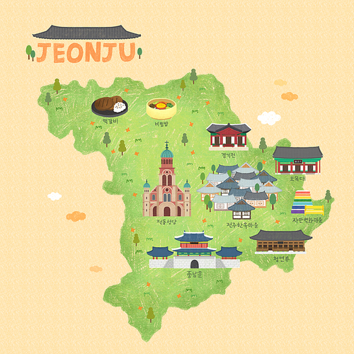
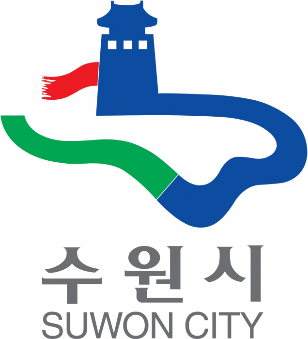

제 이름은 심지수입니다.
MBTI: ENTJ(지휘관, 통솔자)
태어난 곳


제가 태어난 곳은 전주입니다. 전라북도에 위치한 도시이며 음식으로 유명한 지역입니다.
성인이 되고 나서 대학교 진학으로 인해 수원으로 이사를 오게 되었습니다.
가보고 싶은 곳 / 가봤던 곳
가보고 싶은 곳
제가 가보고 싶은 곳은 스위스입니다.
중부 유럽에 위치한 국가이며 연상되는 이미지로는 알프스 산맥이 있습니다.
스위스는 대한민국과 비슷하게 산이 많은 지역입니다. 만년설과 빙하가 있는 산의 자연경관을 보고 싶습니다.
가봤던 곳
제가 국내에서 가봤던 곳들은 위에 지도에 색칠한 지역들이며 가장 인상 깊었던 여행 중 하나는
좋아하는 음식

제가 좋아하는 음식은